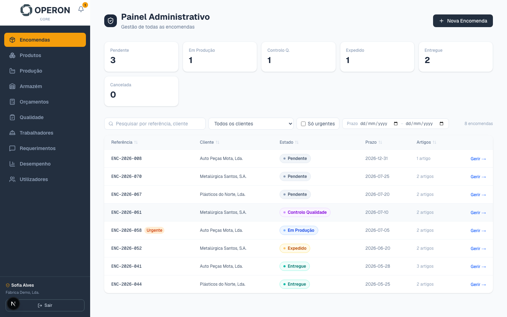
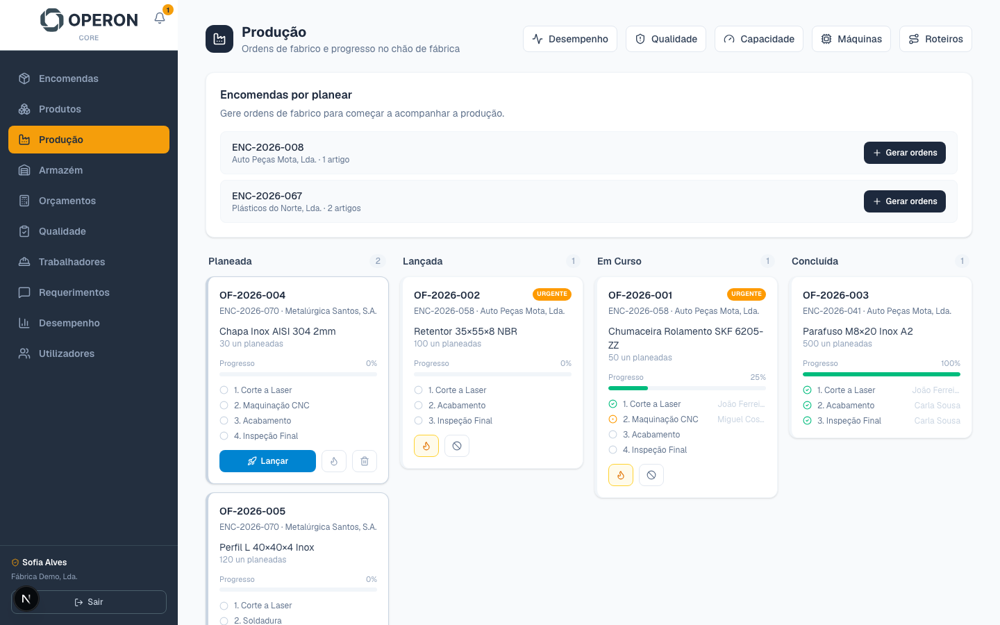
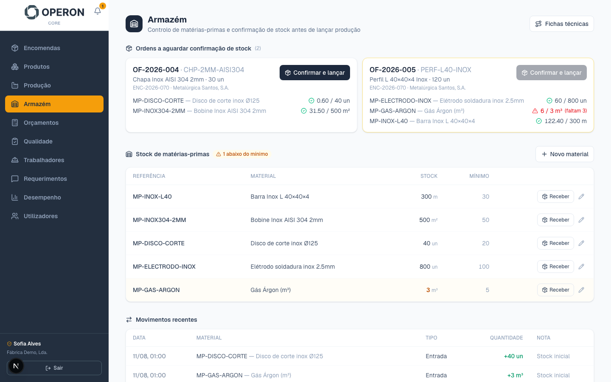

A Operon digitaliza os processos do dia-a-dia da vossa fábrica — produção, encomendas, orçamentos e qualidade — com um trial gratuito antes de escalar e cobrar seja o que for.
A maioria das PMEs industriais na região enfrenta os mesmos problemas, todos os dias.
Ordens de fabrico, registos de máquina e apontamentos feitos à mão — lentos, sujeitos a erro e sem histórico fiável.
Ninguém sabe, ao certo e agora, o que está parado, o que está atrasado ou qual a real capacidade disponível.
Matéria-prima gerida de cabeça ou em folhas soltas — faltas inesperadas e compras de última hora.
Cada orçamento é feito do zero, sem histórico de custos por operação — resposta lenta ao cliente e margens incertas.
Não-conformidades resolvidas verbalmente, sem registo — o mesmo problema repete-se sem ninguém perceber porquê.
Sem dados consolidados, decidir onde investir tempo e dinheiro é sempre um palpite, nunca uma certeza.
Um único sistema, quatro módulos — cada um a resolver uma parte concreta do problema.
Backoffice de gestão — encomendas, orçamentos, produtos, stock e utilizadores por área (produção, armazém, comercial, qualidade).
Terminal de chão de fábrica para operadores registarem produção, paragens e não-conformidades em segundos.
Ponte entre as máquinas e a cloud — recolhe dados de produção diretamente do equipamento, sem apontamentos manuais.
Portal para os vossos clientes acompanharem encomendas, pedirem orçamentos e falarem convosco sem telefonemas.
Começamos pequeno e sem risco — só escalamos depois de provado o valor.
Vamos até à fábrica perceber, na prática, onde estão as maiores perdas de tempo e dinheiro.
Digitalizamos um processo concreto (ex: encomendas ou chão de fábrica) e medimos o impacto real, sem custos.
Comparam o antes e o depois com números concretos — tempo poupado, erros evitados, decisões mais rápidas.
Só depois de validado o valor é que escalamos para o resto da fábrica e passamos a cobrar.
Capturas do sistema a correr, com dados de demonstração.



Duas pessoas, um objetivo: tirar a fábrica do papel e do Excel.
Engenheiro de Software (ISEP). Nos últimos anos desenvolveu software para seguradoras norte-americanas como a Voya e a New York Life, e atualmente constrói software crítico de chão de fábrica para a BMW. Também desenvolveu uma solução digital para implementação de novos produtos na Colep. Já foi operador de chão de fábrica em Vale de Cambra — conhece os processos por dentro e foi essa combinação de experiência técnica e industrial que deu origem à Operon.
Licenciado em Gestão de Marketing (IPAM) e Mestre em Direção Comercial (ISCAP). Key Account Manager na Acerinox Europa, onde gere relações comerciais com contas que vão de grandes corporações a PMEs. Traz essa experiência para a Operon, garantindo que cada projeto começa com uma conversa real sobre as dores do negócio, não com uma apresentação genérica.
Sem apresentações genéricas — queremos perceber as vossas dores específicas e mostrar, na prática, o que conseguimos melhorar.